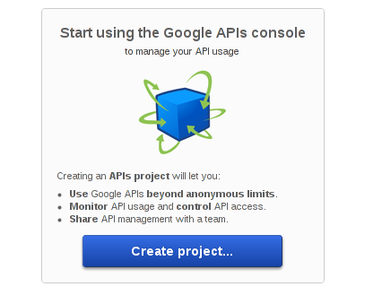
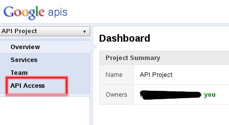
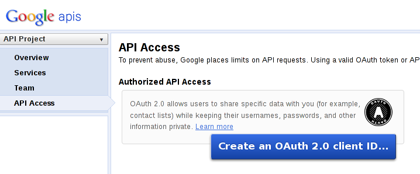
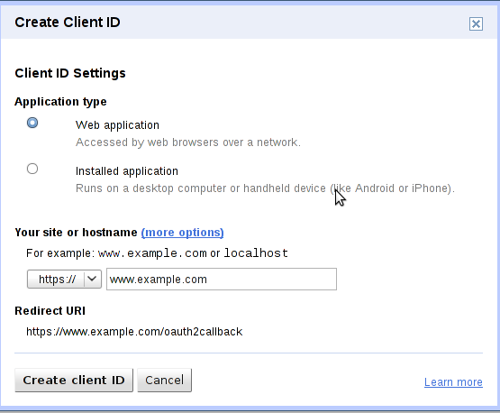
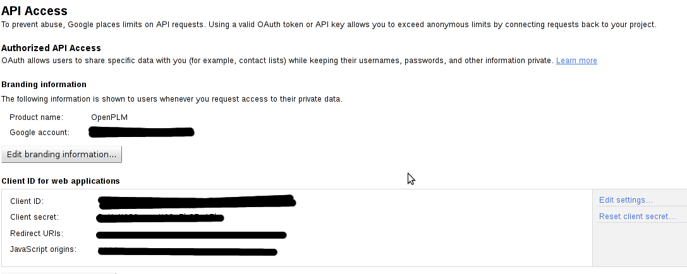

Table Of Contents
Previous topic
3.4. ecr - Engineering Change Requests
Next topic
3.6. oerp – OpenERP Application

3.4. ecr - Engineering Change Requests
3.6. oerp – OpenERP Application
This application adds a GoogleDocument document which links to a document stored in Google Document.
The gdoc application adds the following dependencies:
They are installable through pip or easy_install:
- pip install gdata google-api-python-client
gdoc uses OAuth 2 to authenticate an user so that openPLM does not have to store user passwords.
You must register your application to Google:
Go on https://code.google.com/apis/console/ , if you have never created register an application, this should show you this page:
Click on the Create project button.
Click on the API access link.
Click on Create an OAuth 2.0 client ID... button, this will pop up a form. On the second page, enter your site domain:
Enter your application domain and validate the form. Your credentials are the client ID and client secret fields.

To enable the gdoc application, it must be enabled in the settings file: add 'openPLM.apps.gdoc' to the list of installed applications (INSTALLED_APPS).
At the end of the settings.py file, adds two variables:
GOOGLE_CONSUMER_KEY = u'client id from Google API access page'
GOOGLE_CONSUMER_SECRET = u'client secret from Google API access page'
Run ./manage.py migrate gdoc.
To test this application, create a new GoogleDocument. You will be redirected to a page asking you to allow openPLM to access your documents. Accept and you will be able to select a document from your Google documents.